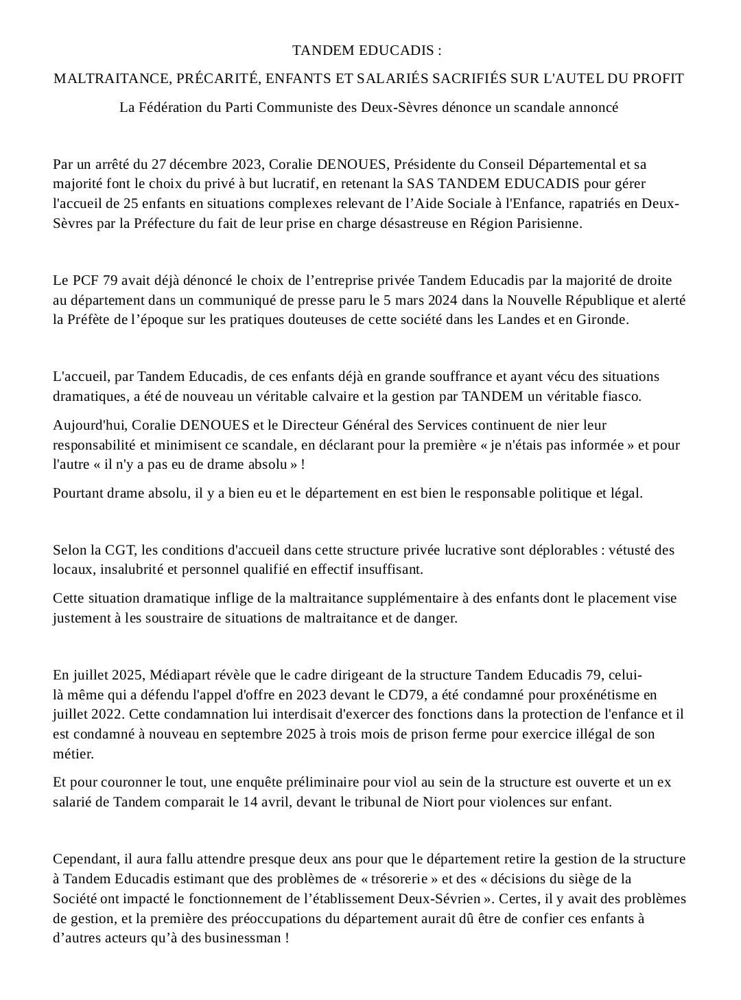
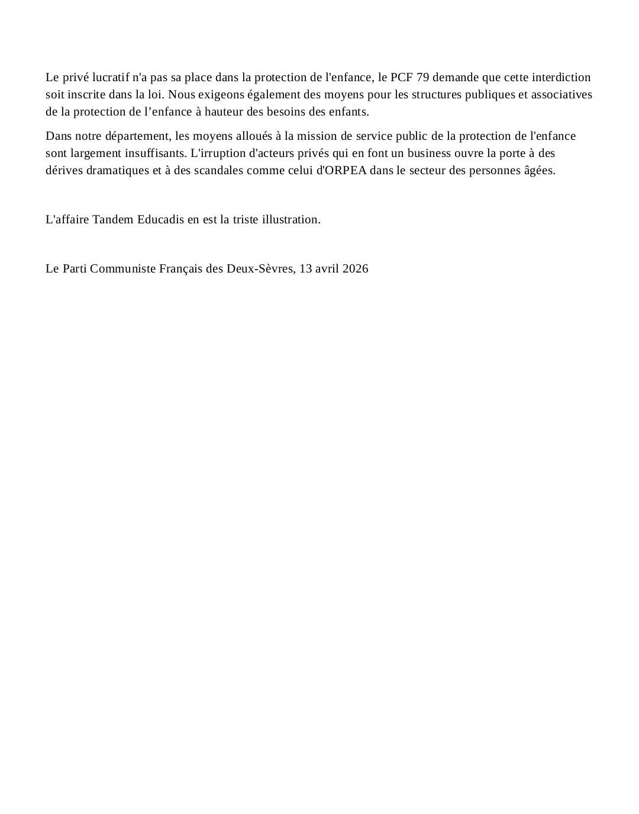

Communiqué fédéral
Tandem Éducadis. Le privé lucratif n’a pas sa place dans la protection de l’enfance
Date indiquée par Facebook · 14 avril 2026
Repères éditoriaux
Dans notre communiqué du 13 avril 2026, nous mettons en cause le choix du Conseil départemental de confier à une entreprise privée lucrative l’accueil d’enfants suivis par l’Aide sociale à l’enfance. Nous demandons que la loi écarte le privé lucratif de la protection de l’enfance et que les structures publiques et associatives disposent de moyens à la hauteur des besoins.
Texte conservé avec la publication
Communiqué de la Fédération du PCF79 relatif à la protection de l'enfance.


Sources
Archive rouge · export Facebook · AR-0002-FB-00817